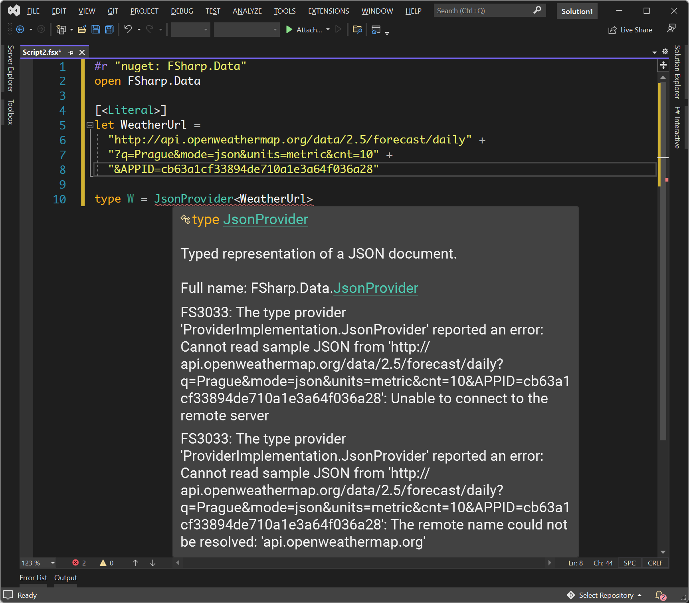

NPRG075
Unexpected perspectives on types
Tomáš Petříček, 309 (3rd floor)
petricek@d3s.mff.cuni.cz
https://tomasp.net | @tomaspetricek
Lectures: Monday 12:20, S7
https://d3s.mff.cuni.cz/teaching/nprg075

Beyond types
Recent developments

Convergences
and divergences
ML brings together data types, abstract types and checking
End of the history?

Convergences
and divergences
ML brings together data types, abstract types and checking
End of the history?
Developments in new directions in engineering and mathematics!
Types
Mathematical connections
Types
Mathematical connections
- Type constructors as algebraic operations
- Proofs in propositional & predicate logic
- Linear logic and modal logics
- Types and cartesian closed categories
Example
Are these two type
definitions equivalent?
type Contact =
| Email of string
| Phone of digits
| Both of string * digits
type Customer =
{ Name : string
Contact : Contact }
Can one represent some
values the other cannot?
type Option<'T> =
| Some of 'T
| None
type Customer =
{ Name : string
Phone : Option<digits>
Email : Option<string> }
Calculating with types

Type constructor algebra
- Record behaves as \(A * B\) or \(A \times B\)
- Unions behave as \(A + B\) or \(A \cup B\)
- Functions
A->Bbehave as \(B^A\) - Unit type is \(1\) and void (never) is \(0\)
Usual algebraic laws work!
- \(A*(B+C) = A*B + A*C\)
- \(A * 1 = A\) and \(A * 0 = 0\)
Calculating with types
\(Contact = (Phone * Email) + Email + Phone\)
\(Customer1\)
\(\quad =Name * Contact\)
\(\quad {\color{green}=Name * ((Phone * Email) + Email + Phone)}\)
\(Customer2\)
\(\quad = Name * (Phone+1) * (Email+1)\)
\(\quad = Name * ((Phone+1) * Email + (Phone+1) * 1)\)
\(\quad = {\color{blue}Name * ((Phone * Email) + Email + Phone }{\color{red}\;+\;1})\)
What else works?

Binary trees
- Derivative of a binary tree?
- \(btree = leaf + btree * btree\)
- Treat \(btree\) as the variable
Derivatives
- Rules in case you forgot: tinyurl.com/nprg075-diff
Derivatives and inverses

Derivative of a binary tree
- \(btree = leaf + (btree^2)\)
- \(btree' = 2*btree\)
- Steps for iterating over containers
- Recursively \(2*(2*(2*\ldots))\)
Can define the inverse!
- Works only in linear logic
- \(A^{-1} = A \multimap 1\), i.e. a function that consumes a value
- \((A^{-1} \times A) \multimap 1\), i.e. one direction of equality
Types
Curry-Howard isomorphism

Miraculous link?
Types in programming are propositions in logic!
Programs are proofs!
Not that surprising..
Hard work to make it fit
Same origins in foundations of mathematics
Curry-Hoard isomorphism
Types as propositions
Function \(A\rightarrow B\) corresponds to implication
Product \(A\times B\) corresponds to conjunction \(A \wedge B\)
Union \(A + B\) corresponds to disjunction \(A \vee B\)
Proofs are programs
A well-typed program of type \(A\) is a proof of \(A\)
Write program to show that a property holds!

Theorem provers
Alf, Coq, Agda & more
Construct proofs by interactively creating programs
Show resulting program (Agda) or list of interactions (Coq)
Programs can run too
Programs as proofs
Function composition
Proposition: \(((A \rightarrow B) \wedge (B \rightarrow C)) \rightarrow (A \rightarrow C)\)
Program as proof: \(\lambda (f, g). \lambda a.g (f a)\)
Distributivity
Proposition: \(A \wedge (B \vee C) \rightarrow (A \wedge B) \vee (A \wedge C)\)
Program as proof: \(\lambda (a, \textbf{inl}~b). \textbf{inl}~(a, b)\)
\(~~~~~~~~~~~~~~~~~~~~~~~~~~~~~~~~~\; \lambda (a, \textbf{inr}~c). \textbf{inr}~(a, c)\)
Inference rules for types and logic

Language design
Importing ideas via maths
- Simplifying types using algebraic laws
- Making sense of units and empty types
- Types inspired by linear and modal logic?
- Types for universal and existential quantifiers?

Linear types
Variable must be
used exactly once!
Resource usage in programming!
Avoid aliasing, efficient memory management
Generalizations to control sharing
Types for modal logics

Necessity and possibility
- \(\diamond A\) - possibility - in a possible world
- \(\square A\) - necessity - all possible worlds
Distributed systems
- Value \(A\), address \(\diamond A\), mobile code \(\square A\)
- Axiom \(\square A \rightarrow A\) - run mobile code to get value
- Axiom \(A\rightarrow \diamond A\) - take address of local value
- Axiom \(\diamond A\rightarrow \square\diamond A\) - address is mobile
Dependent types

Quantifiers as type constructors
-
Universal quantification \(\Pi_{x:A}B(x)\)
Dependent function(x:A) -> B(x) -
Existential quantification \(\Sigma_{x:A}B(x)\)
Dependent pair(x:A) * B(x)
Programming languages
- Origins in theorem provers
- Dependently-typed languages like Coq, Idris and Agda
- Some aspects expressible in Haskell, Scala
Using with dependent types
Capture precise information
Vector of a known length Vec (n:int) A
Other properties, like sortedness of a list
Programming with fancy types
Dependent pair and function
vectWithLength : (n:int) * Vec n string
initVector : (x:int) -> (v:A) -> Vec x A
Types
Engineering perspectives
Demo
Checking weather in F#
Type providers

What is a type provider?
- Extension run at compile-time
- Can run arbitrary code
- Generates classes with members
What can they be used for?
- Infer structure of JSON, XML, CSV
- Import explicit database schema
- Interface with a foreign API

Static type checking?
Type error on a train!
More useful when external service changes format
Well-typed programs
do not go wrong?
Except when the world breaks assumptions
about the schema
Types
Engineering perspective
- Types have to be useful, not always right
- Even unsound types help software engineers
- Invaluable for tooling (completion, checking)
- Documentation and structuring mechanism

TypeScript types
Unsound because of 'any', covariance, unchecked imports
Checking works
well enough!
More reliable editor auto-completion
Demo
Type providers in The Gamma
The Gamma design

Iterative prompting
- Do everything via a type provider
- Construct SQL-like queries & more
- What are the limits of this?
Type provider tricks
- Lazy type generation for "big" types
- Parameterized (dependent) providers
- Fancy types for the masses
Fancy types for the masses
Row types
\[\frac {\Gamma \vdash e : {\color{red}[f_1:\tau_1, \ldots, f_n:\tau_n]}} {\Gamma \vdash e.\text{drop}~f_i : {\color{cc} [f_1:\tau_1, \ldots, f_{i-1}:\tau_{i-1}, f_{i+1}:\tau_{i+1}, \ldots, f_n:\tau_n]}}\]
Embed as classes
\[\frac {\Gamma \vdash e : {\color{blue} C_1}} {\Gamma \vdash e.\text{drop}~f_i : {\color{blue} C_2}} \qquad\qquad\qquad\qquad\qquad\qquad\qquad\qquad\quad\]
\[\begin{array}{l} {fields({\color{blue} C_1}) = {\color{blue} \{f_1:\tau_1, \ldots, f_n:\tau_n\}}}\\ {fields({\color{blue} C_2}) = {\color{blue} \{f_1:\tau_1, \ldots, f_{i-1}:\tau_{i-1}, f_{i+1}:\tau_{i+1}, \ldots, f_n:\tau_n\}}} \end{array}\]
Conclusions
Unexpected perspectives on types

Engineering and mathematical views
Complementary ways of designing & evaluating
Import ideas using maths, prove them correct
Adapt ideas for engineering purpose, show they work
Reading

When Technology Became Language: The Origins of the Linguistic Conception of Computer Programming
From davidnofre.com or direct link
What to read and how
- The birth of programming languages
- Dramatic change in thinking!
- Longer, so read what you like...
Conclusions
Unexpected perspectives on types
- Many ideas imported through mathematics!
- Dependent, linear and modal types
- Making it work in practice is a challenge
Tomáš Petříček, 309 (3rd floor)
petricek@d3s.mff.cuni.cz
https://tomasp.net | @tomaspetricek
https://d3s.mff.cuni.cz/teaching/nprg075
References (1/2)
Curry-Howard and dependent types
- Wadler, P. (2015). Propositions as Types. ACM
- Magnusson, L., Nordström, B. (1994).. The Alf proof editor and its proof engine. Types for Proofs and Programs. TYPES
- Murphy VII, T (2008). Modal Types for Mobile Code. PhD Thesis
- Walker, D. (2004). Substructural type systems. MIT
Type providers & related
- Petricek, T. et al. (2016). Types from data: Making structured data first-class citizens in F#. PLDI
- Petricek, T. (2017). Data exploration through dot-driven development. Proceedings of ECOOP
- Wand, M. (1991). Type inference for record concatenation and multiple inheritance. Information and Computation
References (2/2)
Algebraic types
- McBride, C. (2001). The Derivative of a Regular Type is its Type of One-Hole Contexts. Online (unpublished draft)
- Abbott, M., et al. (2005). d for Data: Differentiating Data Structures. Fundamenta Informaticae
- Petricek, T. (2013). Power of mathematics Reasoning about functional types. Online (blog post)
- Marshall, D., Orchard, D. (2022). How to Take the Inverse of a Type. Proceedings of ECOOP